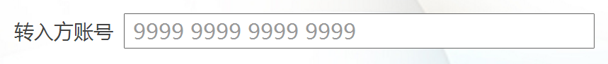
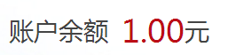
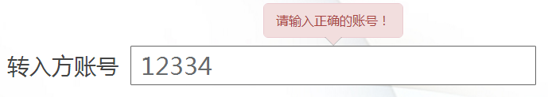

描述
文本框用于显示、输入或编辑文本或数值；
示意图

行为状态
| 状态 |
图例 |
| 初始状态 link,visited |
|
不可编辑状态 gray |
1、纯数字（例如：手机号、账号）
字体：微软雅黑；字号：35px；字色：#bc0e17 |
2、纯文字（例如：地址）
字体：微软雅黑；字号：28px；字色：#444444 |
3、数字文字混排（例如：金额）
数字（参看纯数字定义）文字（参看纯文字定义） |
4、回显信息同按钮搭配（例如：验证码）
按钮具有等待效果，倒计时可配置
|
| 错误提示状态 error |
 |
|
设计规范
- 如果数据长度超出文本框长度，输入内容向左滚动，文本框长度不变。
- 不要在单行文本框上使用任何滚动条。
- 不要为单行只读的文本框添加边框，边框是暗示文本可以被编辑的视觉效果。
- 单行只读文本框必须保证显示所有的文本内容，文本框内容不能超出控件的边界。
- 只读状态中无回显值时，统一显示为“-- --”；
- 输入号码时,可以设置展示模式，如：“####，####，####，####”；
- 下列情况下尽可能右对齐数值文本：
- 存在不止一个数值文本框且文本框是垂直排列的。
- 用户可能会累加或比较这些数值。
- 始终右对齐货币数值。
文本框标签（label）
- 将标签置于文本框的左侧或上方。如果标签位于文本框左侧，标签文本应与文本框文字水平对齐；如果标签位于文本框上方，则标签文本与文本框左边框垂直对齐。
- 对于数字型的文本框可以在文本框之后指定单位，比如“元”等。
文本框的宽度
文本框的宽度是预期输入长度的一个视觉线索。当定义文本框的尺寸时应遵循以下原则：
- 应当为最长的有效数据选择合适的宽度。在大多数情况下，用户应当不需要滚动即可输入或查看可能的最长文本。
- 应当额外空出 30% 的长度（对于较短的文本来说，最多 200%））。
- 如果对于输入没有特定预期的尺寸，则应选择与窗口中其他文本框或控件相一致的宽度。